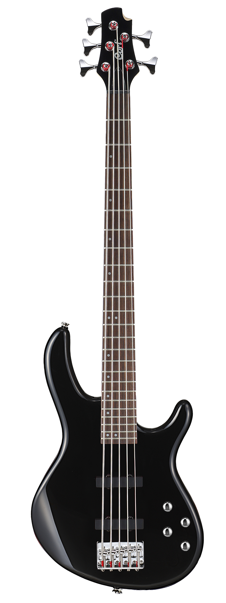
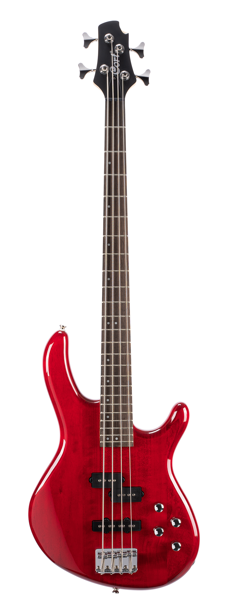
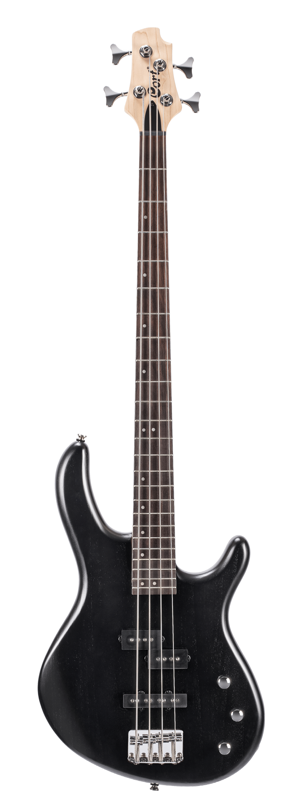

Серія Action
Доступні за ціною, але наповнені якісними матеріалами, компонентами
та майстерністю, баси серії Action визначають цінність для починаючого басиста з різноманітними
функціями, такими як звукосниматели PJ, JJ та мильна панель, а також активна електроніка еквалайзера.

Натисніть і утримуйте для збільшення
Cort-Action Bass V Plus
| Кріплення грифу: | Bolt-On |
| Корпус: | Poplar |
| Гриф: | Hard Maple |
| Накладка грифа: | Jatoba Radius: 15.75"(400㎜) |
| Лади: | 24 |
| Мензура: | 34"(864㎜) |
| Інкрустація накладки грифа: | White Dots |
| Колкова механіка: | Die-Cast |
| Брідж: | Cort® EB6(5) |
| Електроніка: | 1 Volume & 1 Tone, 2 Band Active EQ |
| Звукознімачі: | Cort® Powersound PJ Style Pickup Set |
| Фурнітура: | Chrome |
| Забарвлення: | Black, Trans Red |
Ціна: 7 425 грн

Натисніть і утримуйте для збільшення
Cort-Action Bass Plus
| Кріплення грифу: | Bolt-On |
| Корпус: | Poplar |
| Гриф: | Hard Maple |
| Накладка грифа: | Jatoba Radius: 15.75"(400㎜) |
| Лади: | 24 |
| Мензура: | 34" (864㎜) |
| Інкрустація накладки грифа: | White Dots |
| Колкова механіка: | Die-Cast |
| Брідж: | Cort® EB6(4) |
| Електроніка: | 1 Volume & 1 Tone, 2 Band Active EQ |
| Звукознімачі: | Cort® Powersound JJ Style Pickup Set |
| Фурнітура: | Chrome |
| Забарвлення: | Trans Red, Black |
Ціна: 7 180 грн

Натисніть і утримуйте для збільшення
Cort-Action PJ
| Кріплення грифу: | Bolt-On |
| Корпус: | Poplar |
| Гриф: | Hard Maple |
| Накладка грифа: | Jatoba Radius: 15.75"(400㎜) |
| Лади: | 24 |
| Мензура: | 34" (864㎜) |
| Інкрустація накладки грифа: | White Dots |
| Колкова механіка: | Die-Cast |
| Брідж: | Cort® EB6(4) |
| Електроніка: | 2 Volume & 1 Tone |
| Звукознімачі: | Cort® Powersound PJ Style Pickup Set |
| Фурнітура: | Chrome |
| Забарвлення: | Open Pore Black, Open Pore Walnut |
Ціна: 5 940 грн